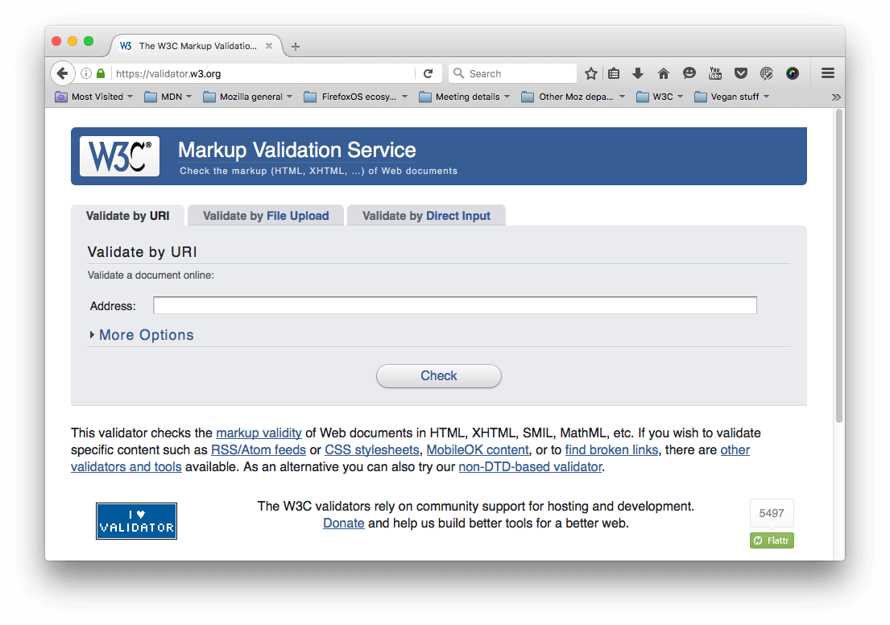
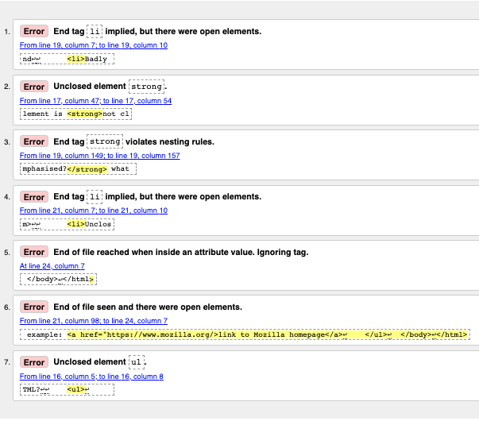

{{LearnSidebar}}
{{PreviousMenuNext("Learn/HTML/Introduction_to_HTML/Document_and_website_structure", "Learn/HTML/Introduction_to_HTML/Marking_up_a_letter", "Learn/HTML/Introduction_to_HTML")}}
Writing HTML is fine, but what if something goes wrong, and you can't work out where the error in the code is? This article will introduce you to some tools that can help you find and fix errors in HTML.
Debugging isn't scary
When writing code of some kind, everything is usually fine, until that dreaded moment when an error occurs — you've done something wrong, so your code doesn't work — either not at all, or not quite how you wanted it to. For example, the following shows an error reported when trying to {{glossary("compile")}} a simple program written in the Rust language.
 Here, the error message is relatively easy to understand — "unterminated double quote string". If you look at the listing, you can probably see how
Here, the error message is relatively easy to understand — "unterminated double quote string". If you look at the listing, you can probably see how println!(Hello, world!"); might logically be missing a double quote. However, error messages can quickly get more complicated and less easy to interpret as programs get bigger, and even simple cases can look a little intimidating to someone who doesn't know anything about Rust.
Debugging doesn't have to be scary though — the key to being comfortable with writing and debugging any programming language or code is familiarity with both the language and the tools.
HTML and debugging
HTML is not as complicated to understand as Rust. HTML is not compiled into a different form before the browser parses it and shows the result (it is interpreted, not compiled). And HTML's {{glossary("element")}} syntax is arguably a lot easier to understand than a "real programming language" like Rust, {{glossary("JavaScript")}}, or {{glossary("Python")}}. The way that browsers parse HTML is a lot more permissive than how programming languages are run, which is both a good and a bad thing.
Permissive code
So what do we mean by permissive? Well, generally when you do something wrong in code, there are two main types of error that you'll come across:
- Syntax errors: These are spelling or punctuation errors in your code that actually cause the program not to run, like the Rust error shown above. These are usually easy to fix as long as you are familiar with the language's syntax and know what the error messages mean.
- Logic errors: These are errors where the syntax is actually correct, but the code is not what you intended it to be, meaning that the program runs incorrectly. These are often harder to fix than syntax errors, as there isn't an error message to direct you to the source of the error.
HTML itself doesn't suffer from syntax errors because browsers parse it permissively, meaning that the page still displays even if there are syntax errors. Browsers have built-in rules to state how to interpret incorrectly written markup, so you'll get something running, even if it is not what you expected. This, of course, can still be a problem!
Note: HTML is parsed permissively because when the web was first created, it was decided that allowing people to get their content published was more important than making sure the syntax was absolutely correct. The web would probably not be as popular as it is today, if it had been more strict from the very beginning.
Active learning: Studying permissive code
It's time to study the permissive nature of HTML code.
- First, download our debug-example demo and save it locally. This demo is deliberately written with some built-in errors for us to explore (the HTML markup is said to be badly-formed, as opposed to well-formed).
- Next, open it in a browser. You will see something like this:

- This immediately doesn't look great; let's look at the source code to see if we can work out why (only the body contents are shown):
<h1>HTML debugging examples</h1>
<p>What causes errors in HTML?
<ul>
<li>Unclosed elements: If an element is <strong>not closed properly,
then its effect can spread to areas you didn't intend
<li>Badly nested elements: Nesting elements properly is also very important
for code behaving correctly. <strong>strong <em>strong emphasised?</strong>
what is this?</em>
<li>Unclosed attributes: Another common source of HTML problems. Let's
look at an example: <a href="https://www.mozilla.org/>link to Mozilla
homepage</a>
</ul>
- Let's review the problems:
- The {{htmlelement("p","paragraph")}} and {{htmlelement("li","list item")}} elements have no closing tags. Looking at the image above, this doesn't seem to have affected the markup rendering too badly, as it is easy to infer where one element should end and another should begin.
- The first {{htmlelement("strong")}} element has no closing tag. This is a bit more problematic, as it isn't easy to tell where the element is supposed to end. In fact, the whole of the rest of the text has been strongly emphasised.
- This section is badly nested:
<strong>strong <em>strong emphasised?</strong> what is this?</em>. It is not easy to tell how this has been interpreted because of the previous problem.
- The {{htmlattrxref("href","a")}} attribute value is missing a closing double quote. This seems to have caused the biggest problem — the link has not rendered at all.
- Now let's look at the markup the browser has rendered, as opposed to the markup in the source code. To do this, we can use the browser developer tools. If you are not familiar with how to use your browser's developer tools, take a few minutes to review Discover browser developer tools.
- In the DOM inspector, you can see what the rendered markup looks like:

- Using the DOM inspector, let's explore our code in detail to see how the browser has tried to fix our HTML errors (we did the review in Firefox; other modern browsers should give the same result):
HTML validation
So you can see from the above example that you really want to make sure your HTML is well-formed! But how? In a small example like the one seen above, it is easy to search through the lines and find the errors, but what about a huge, complex HTML document?
The best strategy is to start by running your HTML page through the Markup Validation Service — created and maintained by the W3C, the organization that looks after the specifications that define HTML, CSS, and other web technologies. This webpage takes an HTML document as an input, goes through it, and gives you a report to tell you what is wrong with your HTML.

To specify the HTML to validate, you can provide a web address, upload an HTML file, or directly input some HTML code.
Active learning: Validating an HTML document
Let's try this with our sample document.
- First, load the Markup Validation Service in one browser tab, if it isn't already open.
- Switch to the Validate by Direct Input tab.
- Copy all of the sample document's code (not just the body) and paste it into the large text area shown in the Markup Validation Service.
- Press the Check button.
This should give you a list of errors and other information.

Interpreting the error messages
The error messages are usually helpful, but sometimes they are not so helpful; with a bit of practice you can work out how to interpret these to fix your code. Let's go through the error messages and see what they mean. You'll see that each message comes with a line and column number to help you to locate the error easily.
If you can't work out what every error message means, don't worry about it — a good idea is to try fixing a few errors at a time. Then try revalidating your HTML to show what errors are left. Sometimes fixing an earlier error will also get rid of other error messages — several errors can often be caused by a single problem, in a domino effect.
You will know when all your errors are fixed when you see the following banner in your output:

Summary
So there we have it, an introduction to debugging HTML, which should give you some useful skills to count on when you start to debug CSS, JavaScript, and other types of code later on in your career. This also marks the end of the Introduction to HTML module learning articles — now you can go on to testing yourself with our assessments: the first one is linked below.
{{PreviousMenuNext("Learn/HTML/Introduction_to_HTML/Document_and_website_structure", "Learn/HTML/Introduction_to_HTML/Marking_up_a_letter", "Learn/HTML/Introduction_to_HTML")}}
In this module